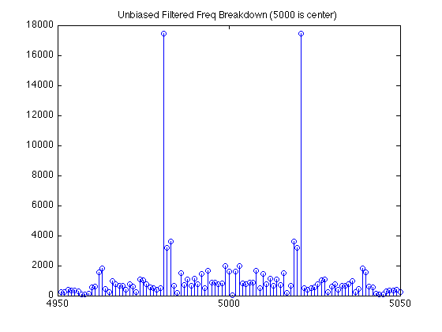

Contents
function extend (filename)
if (nargin == 0)
filename = 'data/walking_from_cc_11_11.txt';
end
close all;
parse and resample sensor data
androidAPP(filename);
load data.mat;
n = 1:accData(1, end);
extended = zeros(3,length(n));
count = 0;
for i = 1:length(accData)
while (accData(1,i) > count)
count = count + 1;
extended(1,count) = accData(2,i);
extended(2,count) = accData(3,i);
extended(3,count) = accData(4,i);
end
end
writing file.....
Compute squares, magnitude, un bias
x2 = extended(1,1:10000).^2;
y2 = extended(2,1:10000).^2;
z2 = extended(3,1:10000).^2;
mag = sqrt(x2+y2+z2);
norm_mag = mag - mean(mag);
Build filters
d140 = drop140();
Populate struct array
pStruct(1).name = 'original';
pStruct(1).x = extended(1,1:10000);
pStruct(1).y = extended(2,1:10000);
pStruct(1).z = extended(3,1:10000);
pStruct(1).mag = mag;
pStruct(2).name = 'STDF 140HZ filter, N = 500';
pStruct(2).x = stdf ( d140, pStruct( 1 ).x, 500);
pStruct(2).y = stdf ( d140, pStruct( 1 ).y, 500);
pStruct(2).z = stdf ( d140, pStruct( 1 ).z, 500);
pStruct(2).mag = stdf ( d140, pStruct( 1 ).mag, 500);
Frequency of Unbiased Original Magnitude signal
figure;
Mag = fftshift(fft(norm_mag));
stem(abs(Mag));
axis([4950 5050 0 11000]);
title('Unbiased Original Freq Breakdown (5000 is center)');

Frequency of Unbiased LowPass Filtered (140 Hz Knee) Magnitude signal
figure;
filt_norm_mag = pStruct(2).mag - mean(pStruct(2).mag);
filt_Mag = fftshift(fft(filt_norm_mag));
stem(abs(filt_Mag));
axis([4950 5050 0 18000]);

Plot
plotStruct(pStruct,2);


end